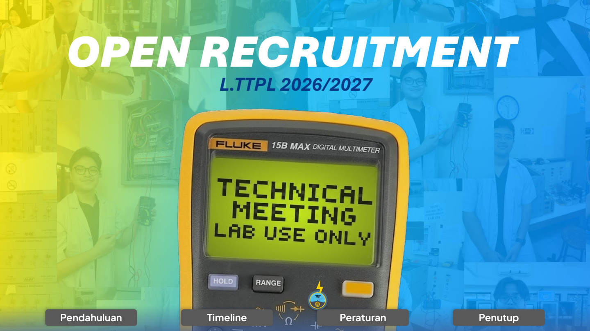
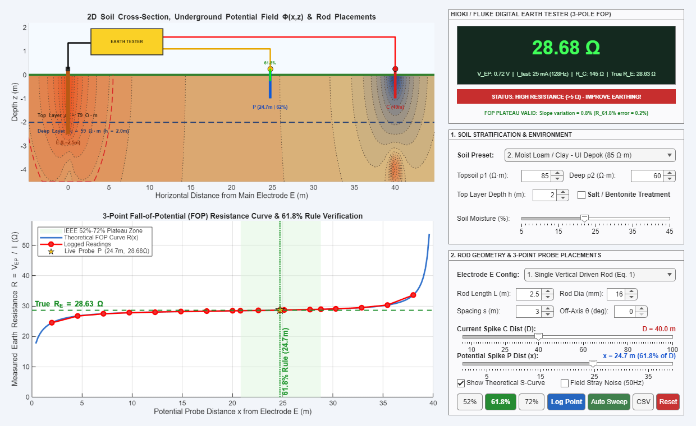
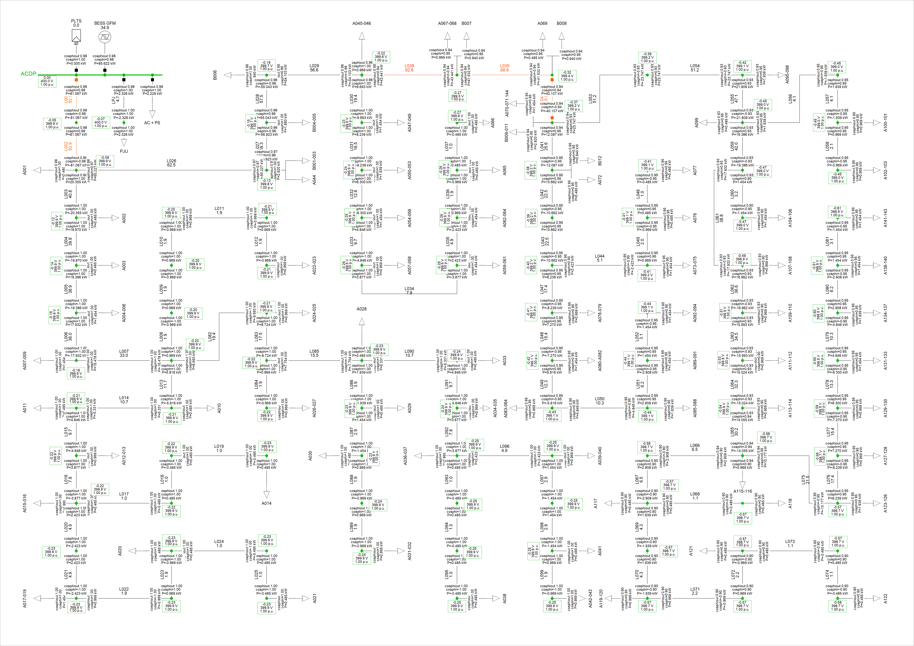
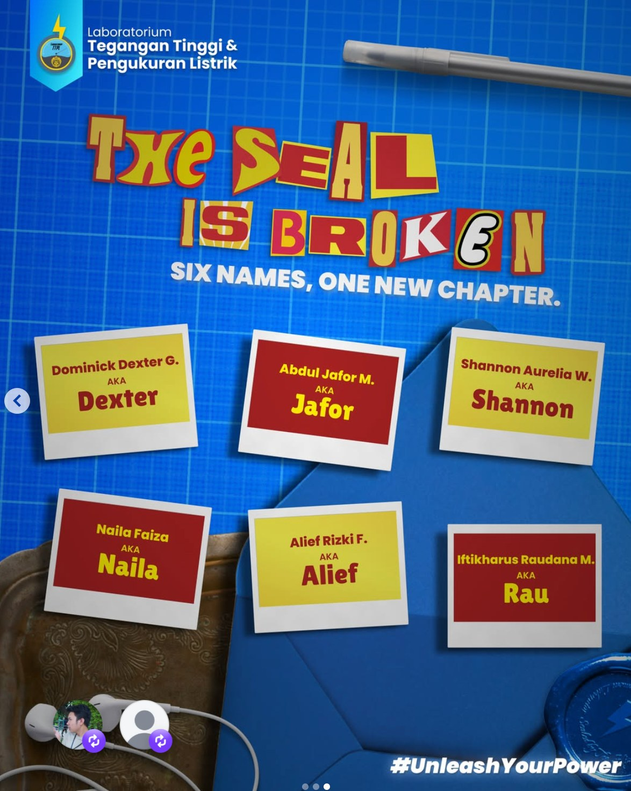

High Voltage & Electrical Measurement Surging With Voltage.
Laboratorium Tegangan Tinggi dan Pengukuran Listrik (TTPL) is the teaching, research, and testing center for high-voltage engineering, precision instrumentation, grounding systems, and electric power networks at Universitas Indonesia.
Where High Voltage Meets Precision Measurement.
“Berfokus pada pembelajaran, penelitian, dan pengujian di bidang tegangan tinggi, pengukuran listrik, serta sistem tenaga listrik.”
Operating on the second floor of the Department of Electrical Engineering building at FTUI Depok, Laboratorium TTPL bridges analytical electrical theory with disciplined laboratory practice for both Regular and International Undergraduate (KKI) students.
Every semester, students progress from linear DC/AC circuit theorems and calibrated benchtop instrumentation to 3-point Fall-of-Potential soil earthing and AC/DC/Impulse high-voltage breakdown testing inside the safety cage.
- 01Technical CuriosityQuestioning every reading, tolerance, and physical mechanism behind the meter.
- 02Responsibility & CommitmentStrict adherence to high-voltage interlocks, calibration procedures, and deadlines.
- 03Communication & TeamworkClear technical reporting, peer teaching, and coordinated bench execution.
- 04Problem Solving MindsetDiagnosing wiring faults, harmonic distortion, and grounding anomalies systematically.

| NO. | PILLAR | LABORATORY PRACTICE |
|---|---|---|
| I | Hands-on Experience | Direct wiring & testing with calibrated Fluke multimeters, PQA, earth testers, oscilloscopes, and HV sets. |
| II | Professional Collaboration | Structured KKI & Regular practicum operations uniting student cohorts, assistants, and industry partners. |
| III | Technical Skill Mastery | Deep grounding in circuit analysis, IEEE 1159 power quality, IEEE 81 earthing, and IEC 60060 HV testing. |
Three Disciplines. One Practicum Standard.
| MODULE | EXPERIMENT TITLE & SCOPE | CHECKPOINT | SPEC |
|---|
Session Execution Standard
- 01 · Prepare Before Lab
- Read bilingual LaTeX PDF modules (ID/EN), watch TTPL FTUI YouTube briefings, and complete pre-lab assignments (TP).
- 02 · Attendance & QnA Gate
- Assistants record actual attendance (on-time / late) and QnA scores (0–100) to unlock report submission.
- 03 · Next-Day 23:59 WIB Deadline
- PDF reports upload via the digital portal with a 5-minute grace window and 10 pts/min late deduction.
Semester Operating Calendar
Verify the Physics Before Entering the Lab.
- Measured R(x)
- 28.68 Ω
- True Earthing R_E
- 28.63 Ω
- Relative Error
- 0.17%
- PUIL (< 5 Ω)
- Improve Earthing
- Electric Field E
- 40.0 kV/cm
- Air Threshold E_c
- 30.0 kV/cm
- Breakdown V_b(d)
- 180.0 kV
- Dielectric State
- Critical
- Active Power P
- 1,994 W
- Reactive Power Q
- +930 VAR
- Apparent Power S
- 2,200 VA
- Power Factor cos φ
- 0.906
Calibrated Hardware in the TTPL Hall.
Software, Simulations & Assistant Selection.


Next.js + Supabase PostgreSQL + Google Apps Script 2-way attendance synchronization, tracked PDF reader analytics, RLS grade gating, and automated Google Drive PDF archiving.
Strict `booktabs` & CircuiTikZ vector typesetting across Indonesian Regular and English KKI editions, paired with MATLAB automated grading sheets.
Five-Stage Assistant Selection Schedule
| NO. | SELECTION STAGE | FORMAT & VENUE | MAR | APR | MAY | JUN |
|---|---|---|---|---|---|---|
| 01 | Written Exam (RL & IDP) | 100 min per track · LKEL Hall · Scientific calculator | ||||
| 02 | Individual Teaching Simulation (RL & IDP) | 60 min live session · Randomized module · Lab TTPL | ||||
| 03 | Equipment Proficiency Test (RL & IDP) | 30 min individual hands-on · Randomized instrument · Lab TTPL | ||||
| 04 | Group Teaching Simulation (High Voltage T3) | 60 min team session · Assigned 1 week prior · Lab TTPL | ||||
| 05 | Final Interview | Commitment, lab stewardship, and engineering teamwork evaluation |
Built by People Who Teach Carefully.

Six Names, One Desk.
Responsible for daily RL, IDP, and T3 laboratory execution, equipment maintenance, module authoring, and student mentorship across Regular and KKI Electrical Engineering cohorts.
| NO. | FULL NAME | CALLSIGN |
|---|---|---|
| 01 | Dominick Dexter G. | Dexter |
| 02 | Abdul Jafor M. | Jafor |
| 03 | Shannon Aurelia W. | Shannon |
| 04 | Naila Faiza | Naila |
| 05 | Alief Rizki F. | Alief |
| 06 | Iftikharus Raudana M. | Rau |
Where TTPL Alumni Power the Industry.
State-Owned Energy
- Pertamina Hulu EnergiUpstream Energy
- PT PLN (Persero)National Power Utility
Power Technology
- SiemensGrid & Electrification
- Schneider ElectricEnergy Management
- GE VernovaPower & High Voltage
Engineering Consulting
- AFRYEnergy & Power Advisory
Engineering & Testing
- VINCI EnergiesEnergy Infrastructure
- EniGlobal Energy
- AnindyaIndependent Surveyor & Lab
Visit the Laboratory Desk.
For practicum administration, open recruitment questions, electrical testing studies, or collaborative engineering work, reach Laboratorium TTPL directly.
Laboratorium Tegangan Tinggi dan Pengukuran Listrik (TTPL)Gedung Departemen Teknik Elektro, Lantai 2
Fakultas Teknik Universitas Indonesia, Kampus Baru UI, Depok 16424